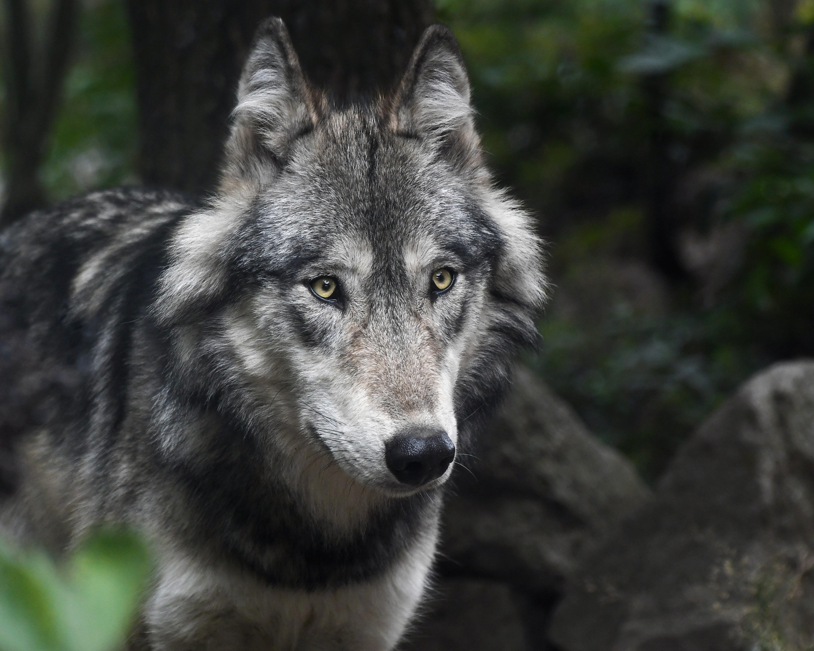
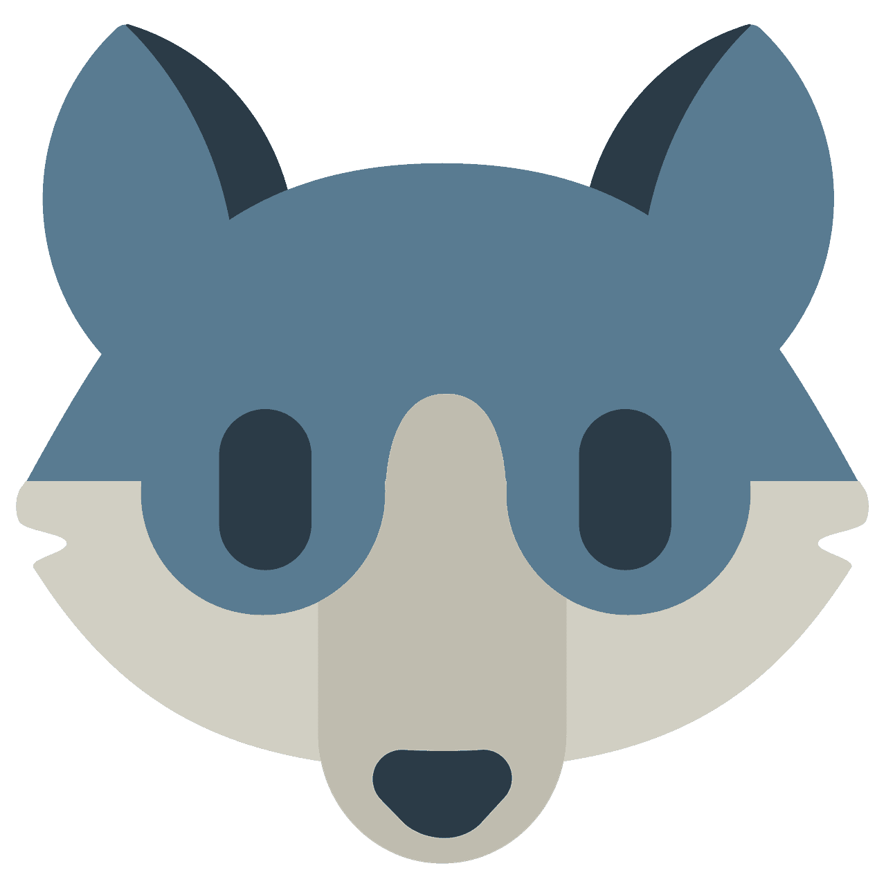

WolfQuest is a game that was initially developed by the Minnesota Zoo and published by Eduweb in 2007. Nearly a full decade later, the game still receives updates, with the latest addition being the "Tower Fall" map. Like all of the other maps (excluding Lost River), Tower Fall is a real location found in Yellowstone National Park.
WolfQuest simulates the life of a gray wolf in Yellowstone. Players must learn how to hunt, court a suitable NPC wolf, and successfully raise their pups into adulthood. Ever since the Sage update, this cycle has been able to be repeated until the player wolves are at least 8 years old, at which point their chance of dying increases with each sleep cycle due to their age. Afterwards, the player can choose to continue their pack's legacy by playing as one of their wolf's offspring. Alternatively, they can start a new save file at any time as a completely new wolf.
Players can also choose between a wide variety of coats when customizing their wolf, and many of these coats are based on real life wolves that lived in Yellowstone National Park, as well as ambassador wolves.
